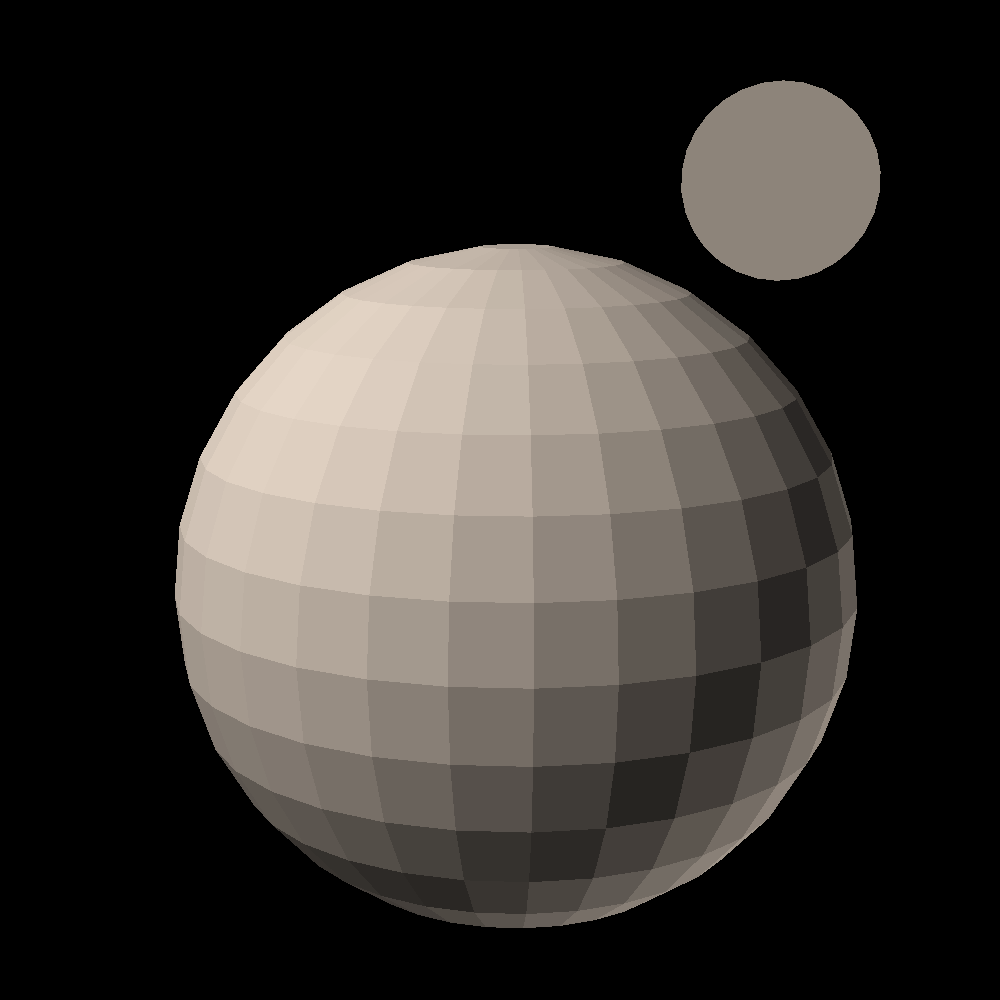

this page is outdated and unlikely to be worked on anytime soon
link to this page
Venus

Venus, originally a hot planet with extremely thick carbon dioxide atmosphere, had been turned into a somewhat livable frozen planet across roughly 200 years in a terraformation project that never reached completion.
A sun shade at its L1 point with the sun keeps the planet cold, while the orbital space around it still benefits from nearly twice as much solar energy as at earth's distance.
Currently the planet is active and thriving despite the incomplete terraformation, with many people living on its surface in the extreme cold and unbreathable atmosphere.
| Planetary information |
| surface temperature |
192K (-81oC) |
| surface pressure |
284kPa (2.8 atm) |
Venusian sky
Due to its current predicament of being covered in dry ice, Venus has an entire light economy which makes sure that the average surface illumination stays around 77 watts per square metre, corresponding to 7238 lux, roughly the level of illumination commonly experienced on earth from a mostly clear sky in the moments when the sun is blocked out by a cloud.
This exact level of solar irradiance is needed to maintain the temperature of 192 kelvin, an awkward compromise between keeping the surface livable at least to some people while also keeping the atmospheric carbon dioxide frozen.
Instead of a single large mirror, orbiting the planet once every 24 hours, simulating the terran day-night cycle, a swarm of small mirror satelites orbits the planet.
These appear in the sky like thousands of bright stars, much brighter than any real star, most of them as bright as the full moon viewed from earth.
Surface settlements often request more or less light at any given time to be reflected onto them, and neighbouring communities negotiate to make the best use of the available sunlight where some of them follow completely custom day-night cycles that do not approximate earth's day and night.
Any of the unused sunlight is evenly distributed across the surface of venus, keeping it from getting too cold while also not warming it up so much that the dry ice would begin to re-sublimate, or swapped out for an equal wattage of beamed microwave power as needed.
This arrangement is forseen to continue for at least as long as it takes to remove all the excess and frozen carbon dioxide from the surface of venus, which is an even more extreme effort than the original proposal of covering it with insulation and burying it under added oceans and soil, and will take a very long time to complete.
Venus terraformation process
The project at the start closely followed the plan of "terraforming venus quickly" originally described by Paul Birch in 1991, it is sometimes poetically said that's the real date on which the project began.
Venus terraformation officially began in [year?] with the approval of solar shade construction at the Venus-Sun L1 point.
Initial stages
A massive solar shade 15.4E+6m in diameter was to be placed at the Sun-Venus L1 point, roughly 2.5E+8 metres from the planet.
Within [?] years the shade had been completed, made from material delivered to the L1 point via hohmann transfer from the asteroid belt.
With the heat of the sun blocked, Venus naturally began to radiate away its heat.
65 years after the sun was blocked out, liquid carbon dioxide began to rain down onto Venus and forming oceans on its surface.
At 145 years in, the surface had reached zero celsius, with the remaining atmosphere being 26 bar of still mostly carbon dioxide.
At 180 years in, "dry snow" began to fall as the atmosphere cooled down enough for the carbon dioxide to solidify under the high pressure atmosphere.
Finally at 200 years since the sun was blocked out the "stage 3" was complete - most of the carbon dioxide had been frozen out of the atmosphere and laid on the surface, deposited in vast oceans covered by ice and snow.
At that point the surface had a temperature of -56 Celsius, and a pressure close to 7 atmospheres, which would slowly continue to fall onto the surface as "dry snow" over the following 10 years, until all of the carbon dioxide fell out of the atmosphere, leaving just 2.8 atmospheres of nitrogen at -81C.
Surface inhabitation
Within the period between 200 and 210 years into the project, there was a huge rise in surface population of venus.
There were many people who wanted to experience the semi-terraformed planet in person.
The point where the surface pressure of Venus dropped low enough to no longer necessitate special breathing gas mixtures of helium and oxygen was the last straw for many who for one reason on another wanted to settle the surface.
Some settlements began efforts at creating engineered humans more resilient to the extreme cold and capable of becoming frozen without sustaining fatal damage, those would go on to become known as the homo venusian much later and eventually established themselves as typical for the environment of venus.
Orbital infrastructure began to include mirror satelites that would bounce sunlight directly to settlements wanting it, for a price, forming a sort of light economy that kept the people supplied with light, all the while limiting the planet's total illumination to keep the temperature stable.
This gradually gave the venusian sky its iconic look, full of bright spots moving across the sky.
De-icing venus
Once the surface temperature was stable, construction of tethered rings was started at the geographic poles of venus.
The mined carbon dioxide would be exported for various uses, among others to serve as a cheap propellant gas for the various satelites in the orbit of venus.
Many catalyst plants were also built, which would be fed some of the mined dry ice in order to split it into carbon and oxygen.
Some of the carbon and oxygen would be sold to local settlements, but the plants continued to operate in excess of demand and simply released the produced oxygen into the atmosphere when it could not be sold, aiming to eventually turn the atmosphere breathable.
It was predicted that a long time before the gas accumulates to breathable levels, it would become at least abundant enough that simple equipment could filter it from ambient air to produce a useable breathing gas.
A notable strange occurance of several terrorist attacks took place shortly after the beginning of these efforts was officially announced.
They are said to have been conducted by a group that was convinced the terraformation of venus would instead simply cover the dry ice under plastic isolation and imported rock and water to keep it solid using mechanical pressure - a method that would be consistent with Paul Birch's original proposal, but not with the actual plan of venus terraformation which was being implemented.
Although the attacks undeniably caused harm to many people, their impact on the overall progress and direction of the terraformation project was negligible.
Status quo
Functioning in the frozen environment proved not too difficult both for people and industry.
Homo venusian as they came to be known had matured into a well defined artificially engineered species in the human genus and continue to thrive across venus.
A few memorials still stand to those killed in the offworlder terrorist attacks.
In the end despite the project not reaching its goal in full, it still left venus it in a vastly more habitable state than before.
The average human requires only warm clothing and an air supply to survive the surface, some even opting for natural fur instead.
The oxygen concentration in the atmosphere of venus had been brought up far enough that, while the air itself is not yet fit for breathing, it can be quite simply filtered and concentrated to produce adequate terran-like air for filling air tanks and interior spaces.
relevant pages
 homo venusian
homo venusian